Version 11 Test Patterns
It is characterized by increased annotation capabilities and variable sampling dimensions. The variable sampling dimensions are based on the CD. Sampling is every 20 microns when CD > 200, every 10 microns when 50 < CD < 200, and every 5 microns when CD < 50. This test pattern is used for general resist modeling and provides the user with an alternative to Test Pattern V10, which is still available.
A detailed explanation of the measurement data for each geometry is provided on the pages that follow.
iso
| 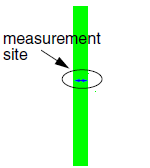 | Row 1 — Isolated line basic geometries. Width varies:
|
iso_pad
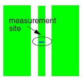 |
Row 2 — Padded iso lines width = CD(w), spacing varies:
|
inv_iso
| 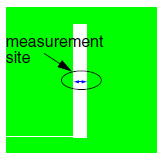 | Row 3 — 5x5 micron patch with center line removed. Center varies:
|
pitch 1
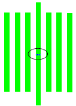 |
Row 4 — Seven dense lines with fixed width = CD(w)-10. Spaces vary:
|
pitch 2
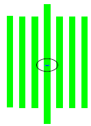 |
Row 6 — 12 of 24 structures containing seven dense lines with width = CD(w). In the first eight structures, spaces are incremented linearly, with 10 nm increments:
:
|
pitch 3
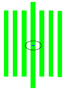 |
Row 7 — Continuation of the pitch structures in Row 6. Structures 7-12 in Row 6 and all structures in Row 7 have a fixed width = CD(w) and spaces are incremented exponentially from CD(s)+7 up to 1.2 microns. |
pitch 4
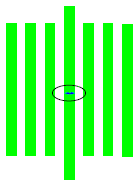 |
Row 8 — Seven dense lines with fixed width = CD(w)+10. Space varies:
|
pitch 5
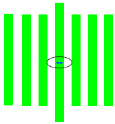 |
Row 9 — Seven dense lines with fixed width = CD(w)+20. Spaces varies:
|
inv_pitch
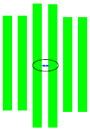 |
Row 11 — Inverse of six dense lines with fixed space = CD(w). Line width (also called inverse space) varies:
Note: the first eight structures are padded to ensure a minimum structure width. Using the “Midheights” setting changes the height of the center lines. |
line_end
|
|
Rows 12-14 — A matrix of two abutting lines with a gap.
|
inverse_line_end
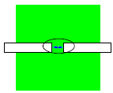 |
Row 16-18 — A matrix of 5x5 micron patches with two inverse lines.
|
contact
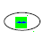 |
Row 19, Col 1-6 — Contacts (rectangular posts)
|
inverse_contact
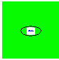 |
Row 19, Col 7-12 — Inverse contacts (rectangular hole in 5x5 micron patch). The diameter of the hole varies:
|
dense_line_end
 |
Row 21, Col 1-6 — 6 abutting lines with gaps. Line width is constant CD(w). Gap varies:
|
corners
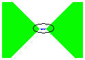 |
Row 21, Col 7-12 — Two abutting corners with a gap. The gap varies:
|